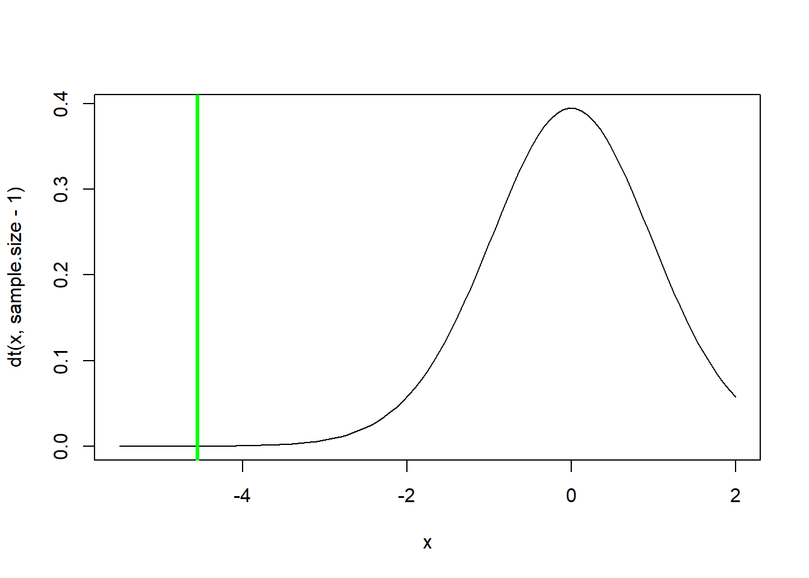
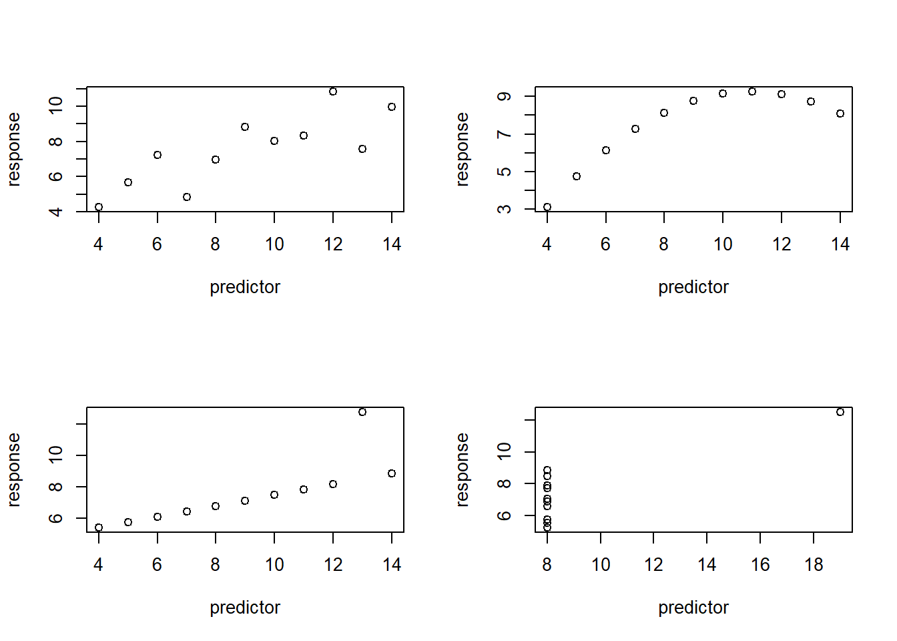
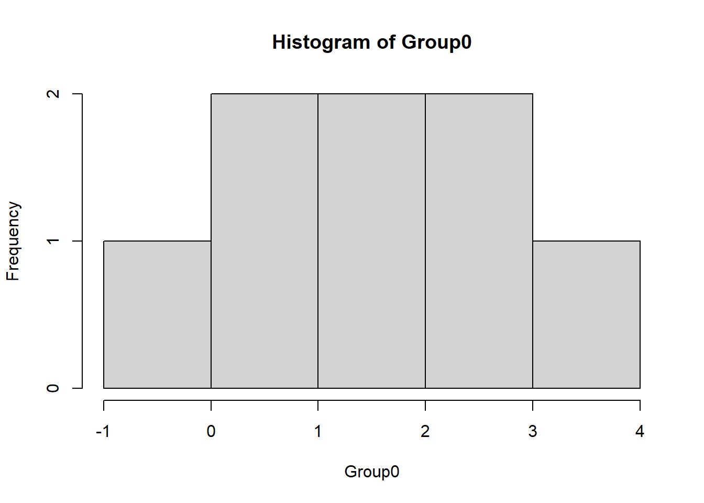
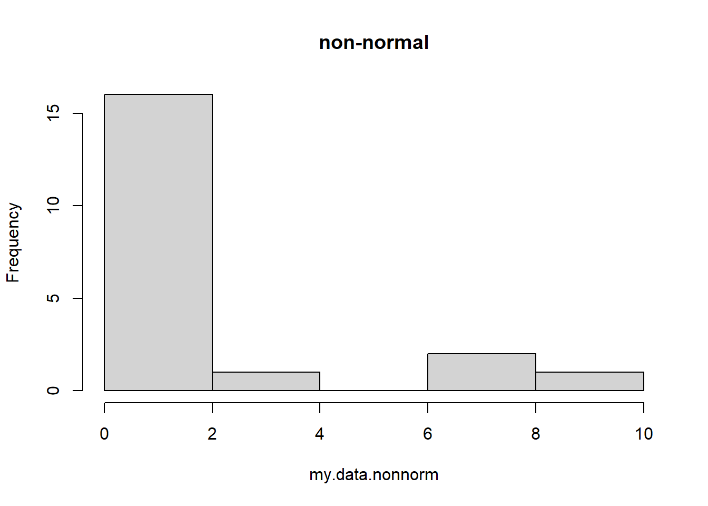
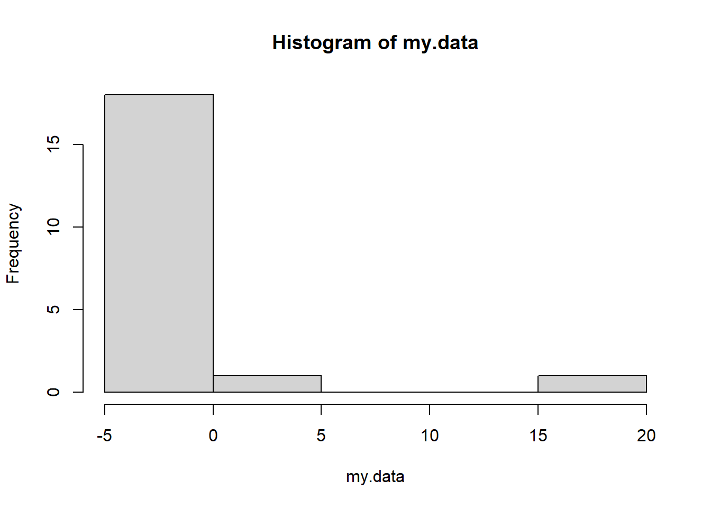
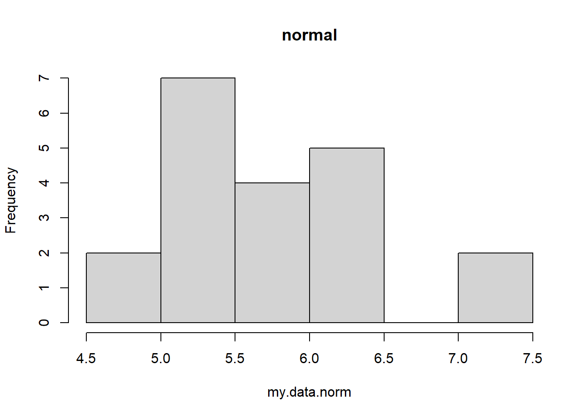
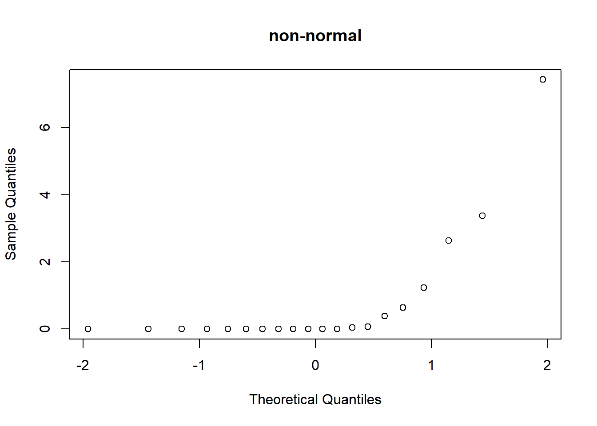
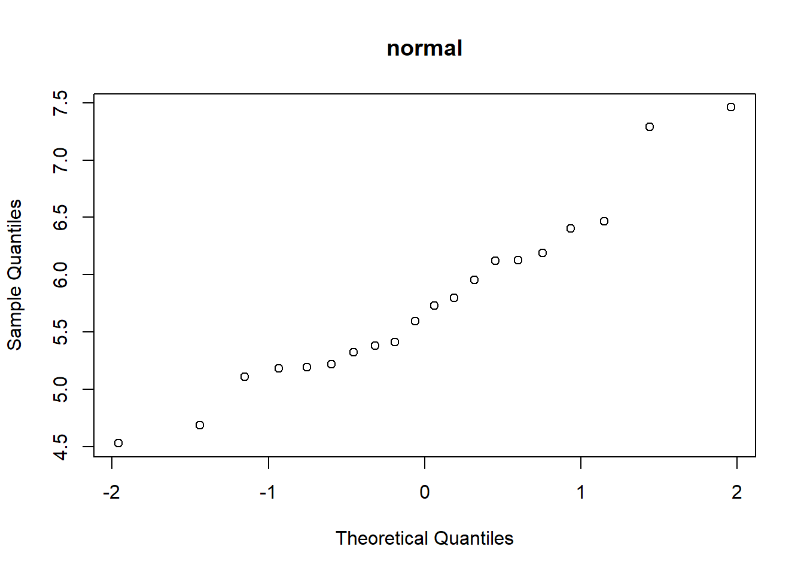
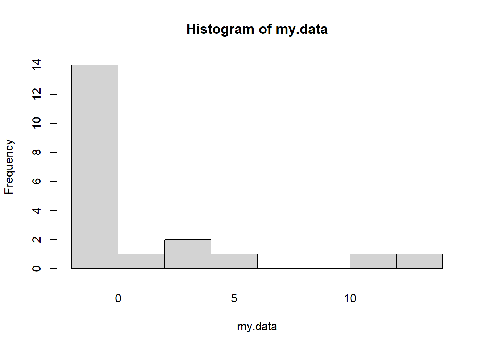
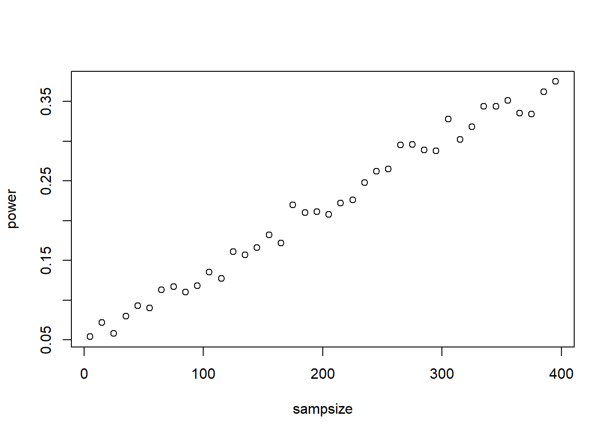

t-tests and z-tests
NRES 710
Fall 2022
Download the R code for this lecture!
To follow along with the R-based lessons and demos, right (or command) click on this link and save the script to your working directory
Considering the “field guide” from the last lecture, we are talking about the t-test, which is appropriate when we have a quantitative response variable and either (1) no predictor variable (one sample t-test) or (2) a binary categorical predictor variable (two sample t-test).
The t statistic: signal to noise ratio for the sample mean
The t statistic is a useful summary statistic that we can calculate from a sample.
The t distribution is the theoretical sampling distribution for the t-statistic under the null hypothesis. It describes the distribution of “false signals” that can arise from random sampling error.
Mathematically, t is the ratio of the difference between the sample mean and the hypothesized population mean (\(\mu_0\)), in units of standard error:
\(t = \frac{(\bar{x}-\mu_0)}{s.e.}\)
Q what part of the above fraction (numerator or denominator) represents the signal? Which represents the “noise”?
Let’s assume that the null hypothesis is true (as we often do), and that our null hypothesis is that the sample mean is equal to zero.
This is almost easier to conceptualize if we imagine a paired design in which, say, a set of individuals are monitored at two points in time: before a treatment and after.
Let’s imagine we are researching the effectiveness of a weight loss drug. We sample 25 patients and weigh them before they start taking the drug and then weigh all of them 1 month after they start taking the drug. Never mind for now that this isn’t the best drug trial design!
So for each patient we compute the change in weight between the first and second measurements. In the null universe, the drug is not effective and we would expect the change to be no greater than expected by random chance. Our task is to convince ourselves that the results (mean observed weight loss across all patients) are meaningful.
Remember:
- the t statistic is the difference between the sample mean and some
hypothesized population mean, standardized in units of standard
error.
- in classical null hypothesis testing, the t-statistic represents the difference (in standard errors) between your sample mean and the hypothetical true mean (e.g., under the null hypothesis).
- the t-distribution is the sampling distribution for the t-statistic.
Here is a worked example, in R:
## Paired t-test example -----------------
weightloss.data <- c(-10.4,-11.6,3.9,1.5,-0.3,-3.5 -10.0,-6.7,-6.1,-2.4,-6.0,2.3,0.1,-4.1,-3.2, -11.3,-3.2,-9.3,-7.5,-5.7,-0.1,0.0,-9.8,1.0,-11.9)
hist(weightloss.data,breaks=7)
mean.weightloss <- mean(weightloss.data)
null.weightloss <- 0
stdev.weightloss <- sd(weightloss.data)
sample.size <- length(weightloss.data)
std.error <- stdev.weightloss/sqrt(sample.size)
t.statistic <- (mean.weightloss-null.weightloss)/std.error
t.statistic## [1] -4.544623curve(dt(x,sample.size-1),-5.5,2)
abline(v=t.statistic,col="green",lwd=3)
t.crit <- qt(0.05,sample.size-1) # 'critical value' of the t statistic- you can reject the null if your value is more extreme than this!
p=pt(t.statistic,sample.size-1) # p value
p # this is the p value## [1] 7.241049e-05options(scipen=100) # if you don't like scientific notation!
p ## [1] 0.00007241049# Alternative: use R's built in t test
t.test(weightloss.data,alternative = "less") # should get the same p-value!##
## One Sample t-test
##
## data: weightloss.data
## t = -4.5446, df = 23, p-value = 0.00007241
## alternative hypothesis: true mean is less than 0
## 95 percent confidence interval:
## -Inf -2.966463
## sample estimates:
## mean of x
## -4.7625Q Does a significant p-value here mean that everyone who takes the drug will lose weight? If not, what does it mean?
NOTE: as the df gets large, the t distribution approximates a standard normal distribution.
Fun fact: William Sealy Gosset – a student of Pearson, worked at Guinness brewery. He was hired to work out a way to determine the quality of stout. He published anonymously as ‘Student’ because Guinness prevented its employees from publishing. That’s why we call it the ‘Student’s t-test’!
Aside: difference between t and normal distribution
You can use this code to explore the difference between the t-distribution and the standard normal distribution:
# difference between t and standard normal
library(ggplot2)
base = ggplot() + xlim(-5,5) + geom_function(aes(col="normal (z)"), fun=dnorm, lwd=2) + labs(y="density",x="potential fake signal")
deg_free <- 1
base + geom_function(aes(col=sprintf("t, df = %s",deg_free)), fun=dt, args=list(df=deg_free), lwd=2,alpha=0.5)
# base r plotting alternative!:
# curve(dnorm,-5,5,ylab="density",xlab="fake signal")
# curve(dt(x,df=1),add=T,col="green")z-tests
The z-test is a simpler version of the t-test for when sample size is large enough so that we don’t really need the t distribution anymore (n>50) or if the population dispersion is known (in which case we can assume the sample mean is normally distributed, following the CLT).
The z statistic is:
\(Z = \frac{(\bar{X}-\mu_0)}{s.e.}\)
As you can see, this looks very much like the t statistic. In fact it is exactly the same!
The difference is that we are now assuming that the sampling variation for this statistic is normally distributed instead of t-distributed, so we now call it the z statistic!
Example z-test: Golden State Warriors height
Tall basketball players are often successful. The Golden State Warriors are often successful.
How tall are the Golden State Warriors (GSW) relative to other basketball players in the NBA?
We hypothesize that GSW players are taller than the NBA average! The null hypothesis is that they are essentially randomly sampled from the general pool of NBA players.
What is the Population? Parameter? Sample? Statistic?
The GSW are 15 players with an average height of 6’8” (80”). A large survey of NBA players suggests they are, on average, 6’7” tall (79”) with a standard deviation of 4 inches.
NOTE: the z-test is only appropriate here because we know the population standard deviation. If this is the case, we know under the CLT that the sample means should follow a normal distribution (not a t-distribution).
The reason the t-distribution differs from the normal distribution is that we also are usually estimating the standard deviation from our sample. The population standard deviation is therefore not known with certainty most of the time!.
NOTE: Dr. Sullivan (NRES) obtained those values from research into the height of NBA players.
Here, the mean (mu) and the standard deviation (sigma) are coming from the population (all NBA players) instead of the sample. And we can measure the whole population!
There are situations where you can use the sample standard deviation to compute standard error for a z-test, but those should be only when the sample size is very large. In general you should use a t-test when the population standard deviation is unknown.
Use this link to download the data for this example: link to GSW data
# z distribution --------------------
## z test
df <- read.csv("GSW_height.csv")
GSWheight <- df$Height
GSWheight## [1] 75 75 81 79 78 84 79 81 81 79 83 79 83 81 77mean.gsw <- mean(GSWheight)
sd.gsw <- sd(GSWheight)
sd.pop <- 4
mean.pop <- 79
n <- length(GSWheight)
s.e. <- sd.pop/sqrt(n)
null.height <- mean.pop # null: GSW are sampled randomly from the pool of all NBA players. They are not fundamentally different!
z.statistic <- (mean.gsw-null.height)/s.e.
z.statistic## [1] 0.6454972curve(dnorm(x),-3,3) # we assume that the z statistic is normally distributed- standard normal!
abline(v=z.statistic,col="green",lwd=3)
p <- 1-pnorm(z.statistic) # is the p value enough evidence to tell you that GSW players are taller than the NBA average??
p ## [1] 0.2593025pnorm(z.statistic)## [1] 0.7406975Q That means that 74% of NBA players are shorter than the GSW average height, right?
Wrong- but why??
Q Would you reject the null hypothesis and say that the GSW team is taller than expected by random chance?
In-class questions (not to be turned in)
- For any normal distribution (e.g., the standard normal or z
distribution) what is the probability of obtaining a random number
within 1 standard deviation of the mean?
- For any normal distribution (e.g., the standard normal or z
distribution) what is the probability of obtaining a random number
within 2 standard deviations of the mean?
- What is the 95% quantile of the standard normal distribution (z distribution)?
t-tests
Let’s face it. T-tests are more commonly used than z-tests for data analysis.
The reason: we usually don’t know the population mean or standard deviation. All we have is the sample!
To review: we have a continuous response variable and either no predictor variable (one sample t-test) or a binary predictor variable (two-sample t-test).
We have already performed simple versions of the t-test (one-sample t-tests- see above). But t-tests are quite flexible and can be applied to a wide variety of null-hypothesis testing scenarios:
One-sample t-test
Quick review: a one-sample t-test tests the consistency of the sample data with the null hypothesis that the sample was generated from a population with a specified mean (often zero, but not necessarily). As we have seen before, the t-statistic in this case is expressed as:
\(t = \frac{(\bar{x}-\mu_0)}{s.e.}\)
Where \(\bar{x}\) is the sample mean, \(s.e.\) is the standard error of the mean, and \(\mu_0\) is the population mean under the null hypothesis.
The t-statistic can be interpreted as the difference between the sample mean and the (null) population mean in units of standard error.
Under the null hypothesis, the sampling distribution of the t-statistic should follow a t distribution with n-1 degrees of freedom.
# one sample t-test (paired t-test is a type of one sample t-test) -------------
sample.data <- rgamma(10,2,.1)
null.mean <- 10
sample.size <- length(sample.data)
sample.mean <- mean(sample.data)
sample.sd <- sd(sample.data)
std.err <- sample.sd/sqrt(sample.size)
t.stat <- (sample.mean-null.mean)/std.err
t.crit <- abs(qt(0.025,sample.size-1)) # for 2-tailed test
p.val <- (1-pt(abs(t.stat),sample.size-1))*2 #
### alternatively use the t.test function:
t.test(sample.data,mu=null.mean) # should get the same answer!##
## One Sample t-test
##
## data: sample.data
## t = 2.5356, df = 9, p-value = 0.03194
## alternative hypothesis: true mean is not equal to 10
## 95 percent confidence interval:
## 11.18081 30.71919
## sample estimates:
## mean of x
## 20.95Paired t-test
A common version of the one-sample t-test is the ‘paired t-test’, in which a measurement is taken on a single individual before and after a treatment is applied. An example of a paired t-test is the ‘weight loss drug’ example from the opening of this lecture. In the weight-loss drug’ example, we measured patients before and after taking a drug and measured the total weight change in each patient. Even though we have two measurements per patient (repeated measures!) we collapse the data for each patient into a single number (difference in weight) before running our t-test.
Two-sample t-test
A two-sample t-test tests the consistency of the sample data with the null hypothesis that sample A was generated from the same underlying population as sample B. The t-statistic in this case is expressed as:
\(t = \frac{(\bar{x_A}-\bar{x_B})}{s.e._{pooled}}\)
Where \(\bar{x_A}\) is the sample mean for group A, \(\bar{x_B}\) is the sample mean for group B, and \(s.e._{pooled}\) is the pooled standard error of the mean across both samples.
The t-statistic in the 2-sample case can be interpreted as the difference between the sample mean from population A and the sample mean from population B, in units of standard errors.
The formula for the pooled standard deviation depends on whether your sample size is equal in the two samples and whether you are able to assume that the standard deviation is the same or similar in the two underlying populations.
For example, the formula for the pooled standard deviation when we assume equal standard deviation in the two populations (equal variance assumption) but we have unequal sample size is:
\(\sqrt{((N_1-1)*\sigma_1^2 + (N_2-1)*\sigma_2^2)/(N_{pooled}-2)}\)
For the 2-sample t-test, the degrees of freedom is equal to the total sample size across both samples minus 2.
Q: Can you think of why the df is two less than the pooled sample size?
# two sample t-test -----------------
sample.data.1 <- rnorm(15,55,10)
sample.data.2 <- rnorm(10,45,10)
sample.size.1 <- length(sample.data.1)
sample.size.2 <- length(sample.data.2)
sample.size.pooled <- length(sample.data.1) + length(sample.data.2)
sample.mean1 <- mean(sample.data.1)
sample.mean2 <- mean(sample.data.2)
sample.sd1 <- sd(sample.data.1)
sample.sd2 <- sd(sample.data.2)
sample.sd.pooled <- sqrt(((sample.size.1-1)*sample.sd1^2 + (sample.size.2-1)*sample.sd2^2)/(sample.size.pooled-2))
std.err.pooled <- sample.sd.pooled*sqrt(1/sample.size.1+1/sample.size.2)
t.stat <- (sample.mean1-sample.mean2)/std.err.pooled
t.crit <- abs(qt(0.025,sample.size.pooled-2)) # for 2-tailed test
p.val <- (1-pt(abs(t.stat),sample.size.pooled-2))*2 # 2-tailed test
### alternatively use the t.test function:
t.test(sample.data.1,sample.data.2,var.equal = T) # should get the same answer!##
## Two Sample t-test
##
## data: sample.data.1 and sample.data.2
## t = 4.0266, df = 23, p-value = 0.0005266
## alternative hypothesis: true difference in means is not equal to 0
## 95 percent confidence interval:
## 7.615085 23.706624
## sample estimates:
## mean of x mean of y
## 54.74747 39.08662One tailed vs two-tailed tests
Tailed-ness is a common point of confusion when running t-tests and z-tests, so it’s worth taking a little time to review.
It all has to do with what we mean by ‘more extreme than the observed test statistic’ (from the definition of a p-value).
In a one-tailed test in which our (alternative) hypothesis is that our sample mean is greater than than the null hypothesis, we mean ‘more positive than the observed test statistic’.
In a one-tailed test in which our (alternative) hypothesis is that our sample mean is less than than the null hypothesis, we mean ‘more negative than the observed test statistic’.
In a two-tailed test, we mean ‘more positive or more negative than the absolute value of our observed test statistic’ (absolute value is more extreme)
Here is an R demo to illustrate the concept:
We have the following data:
# one vs two tailed demo
#my.data <- rnorm(15, 0.5, 1) # generate sample data
my.data <- c(0.20119786,1.41700898,-0.72426698,0.44006284,0.01487128,-0.19031680,1.75470699,-0.81992816,2.31978530, 2.71442595,-0.31461411,0.52086138,-0.50580117,1.52260888,0.76454698)
samp.mean <- mean(my.data)
samp.sd <- sd(my.data)
samp.n <- length(my.data)
std.err <- samp.sd/sqrt(samp.n)
null.mean <- 0
t.statistic <- (samp.mean-null.mean)/std.err
### Two-tailed
curve(dt(x,samp.n-1),-3,3, main="Meaning of more extreme (two tailed version)",
ylab="probability density",xlab="t statistic") # visualize the sampling distribution of the t-statistic
abline(v=t.statistic,lwd=2,col="blue")
xs <- seq(abs(t.statistic),10,0.05)
ys <- dt(xs,samp.n-1)
polygon(x=c(xs,rev(xs)),y=c(ys,rep(0,times=length(ys))),col="green",border=NA)
polygon(x=c(-xs,rev(-xs)),y=c(ys,rep(0,times=length(ys))),col="green",border=NA)
p.twosided <- pt(-abs(t.statistic),samp.n-1)*2 # two-tailed p-value
text(-2,0.3,paste("p =",round(p.twosided,4)))
### One-sided (alternative = 'greater')
curve(dt(x,samp.n-1),-3,3, main="Meaning of more extreme (one tailed version: greater than)",
ylab="probability density",xlab="t statistic") # visualize the sampling distribution of the t-statistic
abline(v=t.statistic,lwd=2,col="blue")
xs <- seq(t.statistic,10,0.05)
ys <- dt(xs,samp.n-1)
polygon(x=c(xs,rev(xs)),y=c(ys,rep(0,times=length(ys))),col="green",border=NA)
p.onesided <- pt(-abs(t.statistic),samp.n-1) # one-tailed p-value
text(-2,0.3,paste("p =",round(p.onesided,4)))
In the same way, the critical value for a t-statistic is different for a two-tailed vs a one-tailed test:
### t-crit in one tailed vs two tailed test
sample.size=7
curve(dt(x,sample.size-1),-8,4, main="2-tailed vs 1-tailed critical value",
xlab="t-statistic",ylab="probability density")
alpha <- 0.1
t.crit.twosided <- qt(alpha/2,sample.size-1)
abline(v=c(t.crit.twosided,abs(t.crit.twosided)),col="red",lwd=2)
t.crit.twosided <- qt(alpha/2,sample.size-1)
abline(v=c(t.crit.twosided,abs(t.crit.twosided)),col="red",lwd=2)
t.crit.onesided <- qt(alpha,sample.size-1)
abline(v=abs(t.crit.onesided),col="green",lwd=2)
abline(v=t.crit.onesided,col="blue",lwd=2)
legend("topleft",lwd=c(2,2,2),col=c("red","green","blue"),bty="n",legend=c("two-tailed crit value","one-tailed crit value (greater than)","one-tailed crit value (less than)"))
All of these critical values have the same percentage of the sampling distribution that are more extreme than them (the percentage is alpha, which is set at 0.1 in this example)– but the definition of ‘extremeness’ differs for the one-tailed and two-tailed cases!
Welch’s t-test (default t-test in R)
Welch’s t-test allows for unequal sample sizes AND unequal variance in the two populations. The Welch’s t-test is like the two-sample t-test we already ran, but it is more flexible. Like other t-tests, this test is fairly robust against violations of normality due to the CLT. This is the DEFAULT version of a t-test in R. If you want a classical Student’s t-test, you need to tell it to do so (otherwise it will do the Welch’s test; use the ‘var.equal = TRUE’ argument to run the classical test)!
I won’t go through the math for the Welch’s t-test (you can look it up if you’d like) because the basic concepts and interpretation are the same. The differences lie in the computation of the pooled variance and the degrees of freedom.
Because the Welch’s t-test is robust to unequal variance
(heteroskedasticity) it can be more robust than the lm()
function, which will assume equal variance among the residuals for the
two groups.
t-tests in R
Previously, we have mostly avoided using R’s built in ‘t-test’ function. Let’s use it now!
# More t-test examples
# T-tests ---------------
# Are my data greater than zero?
Group0 <- c(0.5, -0.03, 4, 2.5, 0.89, 2.2, 1.7, 1.125)
hist(Group0)
t.test(Group0,alternative="greater") # This gets at directionality##
## One Sample t-test
##
## data: Group0
## t = 3.5487, df = 7, p-value = 0.00468
## alternative hypothesis: true mean is greater than 0
## 95 percent confidence interval:
## 0.7507388 Inf
## sample estimates:
## mean of x
## 1.610625#Are my data different than zero?
Group0 <- c(0.5, -0.03, 4, 2.5, 0.89, 2.2, 1.7, 1.125)
hist(Group0)
t.test(Group0) # Okay, that's to zero. What about if it's different than 1? ##
## One Sample t-test
##
## data: Group0
## t = 3.5487, df = 7, p-value = 0.00936
## alternative hypothesis: true mean is not equal to 0
## 95 percent confidence interval:
## 0.5374007 2.6838493
## sample estimates:
## mean of x
## 1.610625# are my data different than 1?
t.test(Group0, mu=1)##
## One Sample t-test
##
## data: Group0
## t = 1.3454, df = 7, p-value = 0.2205
## alternative hypothesis: true mean is not equal to 1
## 95 percent confidence interval:
## 0.5374007 2.6838493
## sample estimates:
## mean of x
## 1.610625# Now let's test two groups.
# are the means equal?
group1 <- c(7,9,6,6,6,11,6,3,8,7)
group2 <- c(11,13,8,6,14,11,13,13,10,11)
t.test(group1, group2, var.equal=T) # Notice how we set equal variance? Look at the output - "Two Sample t-test."##
## Two Sample t-test
##
## data: group1 and group2
## t = -3.9513, df = 18, p-value = 0.000936
## alternative hypothesis: true difference in means is not equal to 0
## 95 percent confidence interval:
## -6.27997 -1.92003
## sample estimates:
## mean of x mean of y
## 6.9 11.0# is this one-tail or two?
group1 <- c(7,9,6,6,6,11,6,3,8,7)
group2 <- c(11,13,8,6,14,11,13,13,10,11)
t.test(group1, group2) # "Welch's Two Sample t-test"##
## Welch Two Sample t-test
##
## data: group1 and group2
## t = -3.9513, df = 17.573, p-value = 0.0009743
## alternative hypothesis: true difference in means is not equal to 0
## 95 percent confidence interval:
## -6.283771 -1.916229
## sample estimates:
## mean of x mean of y
## 6.9 11.0# WELCH'S TEST IS THE DEFAULT IN Rt-test assumptions
Normality of the data
Like we have mentioned before, the t-test is quite robust to non-normality of the raw data – this is due to the Central Limit Theorem!
However, if the data are strongly skewed or otherwise clearly non-normal you may want to go with a non-parametric alternative (see below)!
Testing for normality!
Before ‘accepting’ the results of a statistical test, we often want to run ‘goodness-of-fit’ tests to see if there is any reason to think we may be violating key assumptions of our statistical analyses. For the t-test and many other parametric tests, one ‘goodness-of-fit’ test we might want to run is a test for normality. For linear regression analyses, we test for normality of the residuals.
For the t-test, we should test for normality of the data (one-sample t-test) or test separately for each of the two groups (two-sample t-test).
Here we will discuss two tests- one visual and one quantitative. The visual test is called a ‘quantile-quantile (Q-Q) plot’ and the quantitative test is called a Shapiro-Wilk test.
The Q-Q plot compares the quantiles of the observed data (y axis) with the theoretical quantiles from a normal distribution (x axis). If the q-q plot is highly non-linear, your data are probably not normally distributed and you might want to run a non-parametric alternative.
The Shapiro-Wilk test is a way of quantitatively assessing the linearity of the q-q plot such that you can get a p-value. The p-value here is interpreted the same as any other p-value. The catch is that the null hypothesis is that the data are normally distributed. If p>alpha you fail to reject the null - that is, you can move forward assuming that the data are normally distributed!
## testing for normality ------------------
my.data.nonnorm <- rgamma(20,0.1,0.1) # simulate some non-normal data
hist(my.data.nonnorm,main="non-normal") # visualize the data distribution
my.data.norm <- rnorm(20,6,0.9) # simulate some normal data
hist(my.data.norm,main="normal") # visualize the data distribution
# visualize q-q plot
qqnorm(my.data.nonnorm,main="non-normal") # visual test for normality
qqnorm(my.data.norm,main="normal")
# run shapiro-wilk test
shapiro.test(my.data.nonnorm)##
## Shapiro-Wilk normality test
##
## data: my.data.nonnorm
## W = 0.51579, p-value = 0.0000004431shapiro.test(my.data.norm)##
## Shapiro-Wilk normality test
##
## data: my.data.norm
## W = 0.95002, p-value = 0.3674Outliers
The t-test can be highly affected by outliers. If you suspect your data contain highly influential outliers, you might want to run a non-parametric alternative, as non-parametric tests are much less influenced by outliers.
To look for outliers, the first step is to simply visualize a histogram of the raw data and look for any observations that fall far from the others.
Equal variance
Some versions of the two-sample t-test assume equal variance. I generally recommend using the Welch’s t-test, which is robust to unequal variances. But, it’s useful to know how to test for unequal variances. Bartlett’s test and Levene’s test are both useful for assessing the equality of variances in two or more groups. These tests are also useful for ANOVA.
# test for equal variances
# are the variances equal?
group1 <- c(7,9,6,6,6,11,6,3,8,7)
group2 <- c(11,13,8,6,14,11,13,13,10,11)
bartlett.test(list(group1,group2)) # Bartlett's test has stong assumption of normality##
## Bartlett test of homogeneity of variances
##
## data: list(group1, group2)
## Bartlett's K-squared = 0.2096, df = 1, p-value = 0.6471car::leveneTest(c(group1,group2),rep(c("group1","group2"),each=10)) # Levene's test is less reliant on normality## Warning in leveneTest.default(c(group1, group2), rep(c("group1", "group2"), :
## rep(c("group1", "group2"), each = 10) coerced to factor.## Levene's Test for Homogeneity of Variance (center = median)
## Df F value Pr(>F)
## group 1 0.1858 0.6716
## 18Non-parametric alternatives
If your data are highly non-normal or contain obvious outliers, you probably want to run one of the non-parametric alternatives to the classical t-test. These tests do not assume normality of the data nor are they highly affected by outliers!
Wilcoxon signed-rank test
The non-parametric (distribution-free) alternative to the one-sample t-test is called the one sample Wilcoxon signed rank test. This analysis first reduces the data to signs- negative 1 if the observation is greater than the null and -1 if the data are less than the null. Then, like many non-parametric tests, you sort the data from smallest to largest absolute value. You then multiply the ranks times the signs and sum across all observations. This test statistic (W) has a known sampling distribution (approximately anyway!) and therefore you can compute a p-value. The null hypothesis for the Wilcoxon test refers to the median of the distribution and not the mean (the null hypothesis for the t-test refers to the mean). Therefore the two tests are not strictly comparable!
# Wilcoxon signed rank test
my.data <- rgamma(20,0.1,0.1)-2
hist(my.data)
wilcox.test(my.data)## Warning in wilcox.test.default(my.data): cannot compute exact p-value with ties##
## Wilcoxon signed rank test with continuity correction
##
## data: my.data
## V = 91, p-value = 0.6142
## alternative hypothesis: true location is not equal to 0t.test(my.data) # t-test for comparison##
## One Sample t-test
##
## data: my.data
## t = 0.36876, df = 19, p-value = 0.7164
## alternative hypothesis: true mean is not equal to 0
## 95 percent confidence interval:
## -1.739000 2.482826
## sample estimates:
## mean of x
## 0.371913Mann-Whitney U test
The non-parametric alternative to the two-sample t-test is called the Mann Whitney U test (or Wilcoxon rank sum test). This analysis first reduces the data to ranks- that is, you first sort the data from smallest to largest absolute value. You then essentially test to see if the ranks of one group are higher on average than the ranks of the other group. This test statistic (U) has a known sampling distribution (approximately anyway!) under the null hypothesis and therefore you can compute a p-value. The null hypothesis for the Mann-Whitney test is that there is a 50% probability that a single sample from one distribution is larger than a single sample drawn from the other distribution. The null hypothesis for the t-test is that the means of two distributions are the same. Therefore the two tests are not strictly comparable!
# Wilcoxon signed rank test
my.data1 <- rgamma(20,0.1,0.1)-2
my.data2 <- rgamma(20,0.2,0.1)-2
median(my.data1)## [1] -1.990913median(my.data2)## [1] -1.934051wilcox.test(my.data1,my.data2)##
## Wilcoxon rank sum exact test
##
## data: my.data1 and my.data2
## W = 138, p-value = 0.0965
## alternative hypothesis: true location shift is not equal to 0t.test(my.data1,my.data2) # t-test for comparison##
## Welch Two Sample t-test
##
## data: my.data1 and my.data2
## t = -0.82194, df = 36.193, p-value = 0.4165
## alternative hypothesis: true difference in means is not equal to 0
## 95 percent confidence interval:
## -4.182745 1.769844
## sample estimates:
## mean of x mean of y
## -0.5950182 0.6114325#### perform rank test from scratch!
allobs <- c(my.data1,my.data2)
inorder <- order(allobs)
rank1 <- inorder[1:20]
rank2 <- inorder[21:40]
t.test(rank1,rank2,var.equal = T) # perform t-test on the ranks (usually similar to Mann-Whitney test)##
## Two Sample t-test
##
## data: rank1 and rank2
## t = -0.78051, df = 38, p-value = 0.4399
## alternative hypothesis: true difference in means is not equal to 0
## 95 percent confidence interval:
## -10.421653 4.621653
## sample estimates:
## mean of x mean of y
## 19.05 21.95Power analysis for t-test
Okay, before we leave the t-test, let’s run a power analysis! Remember that a power analysis is a way of assessing whether you are likely to detect a signal given your null hypothesis is false (i.e., there is a signal there to detect!). Power analyses can be a great way to assess if your sampling design is adequate to detect a signal. If not, you may want to alter your sampling design by adding more replicates!
# Power analysis ----------------------
# First we will set the population parameters:
true.mean.A <- 13.5
true.mean.B <- 13.9
true.sd <- 3.4
# Assume a two-tailed test- alternative hypothesis is that the mean of A is different from the mean of B
# Now let's set the sampling scenario
sampsize.A <- 10
sampsize.B <- 12
# now we will simulate a single 'experiment'
samp.A <- rnorm(sampsize.A,true.mean.A,true.sd)
samp.B <- rnorm(sampsize.B,true.mean.B,true.sd)
# and now we can run a test!
this.test <- t.test(samp.A,samp.B,var.equal = T)
# and determine if we rejected our null hypothesis (which we know is not true!)
this.test$p.value < 0.05## [1] FALSEOkay, but if we really want to compute power we need to do this many times and see what percent of samples allow us to reject the null!
# full power analysis: ------------
# First we will set the population parameters:
true.mean.A <- 13.5
true.mean.B <- 13.9
true.sd <- 3.4
# Assume a two-tailed test- alternative hypothesis is that the mean of A is different from the mean of B
# Now let's set the sampling scenario
sampsize.A <- 10
sampsize.B <- 12
# now we will simulate LOTS of 'experiments'
pvals <- numeric(1000)
for(i in 1:1000){
samp.A <- rnorm(sampsize.A,true.mean.A,true.sd)
samp.B <- rnorm(sampsize.B,true.mean.B,true.sd)
# and now we can run a test!
this.test <- t.test(samp.A,samp.B,var.equal = T)
# and determine if we rejected our null hypothesis (which we know is not true!)
pvals[i] <- this.test$p.value
}
# hist(pvals)
length(which(pvals<0.05))/1000## [1] 0.059Of course, if your power is not adequate, you may want to increase sample size. But what is the minimum sample size that gives you sufficient power? We can use simulation to answer this question!
# full power analysis WITH SAMPLE SIZE DETERMINATION: --------
# First we will set the population parameters:
true.mean.A <- 13.5
true.mean.B <- 13.9
true.sd <- 3.4
# Assume a two-tailed test- alternative hypothesis is that the mean of A is different from the mean of B
# now we will simulate LOTS of 'experiments' under different sample sizes
sampsize <- seq(5,400,10)
power <- numeric(length(sampsize))
for(j in 1:length(sampsize)){
pvals <- numeric(1000)
for(i in 1:1000){
samp.A <- rnorm(sampsize[j],true.mean.A,true.sd)
samp.B <- rnorm(sampsize[j],true.mean.B,true.sd)
# and now we can run a test!
this.test <- t.test(samp.A,samp.B,var.equal = T)
# and determine if we rejected our null hypothesis (which we know is not true!)
pvals[i] <- this.test$p.value
}
# hist(pvals)
power[j] <- length(which(pvals<0.05))/1000
}
names(power) <- sampsize
plot(power~sampsize)
So what sample size would you need (in each of the two groups) to detect a signal in this case?